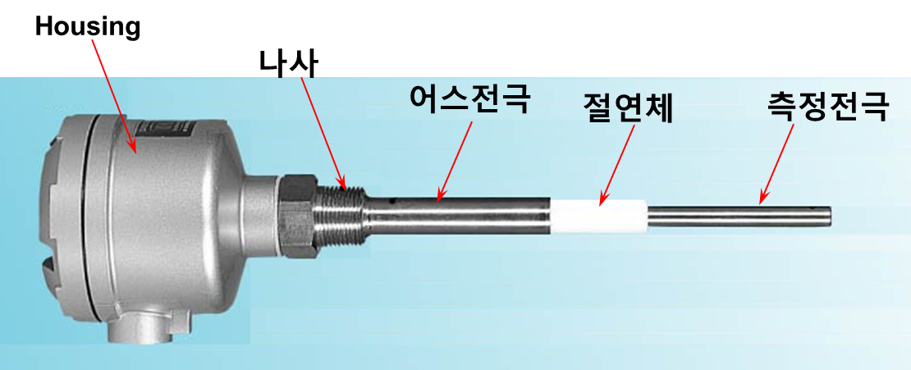
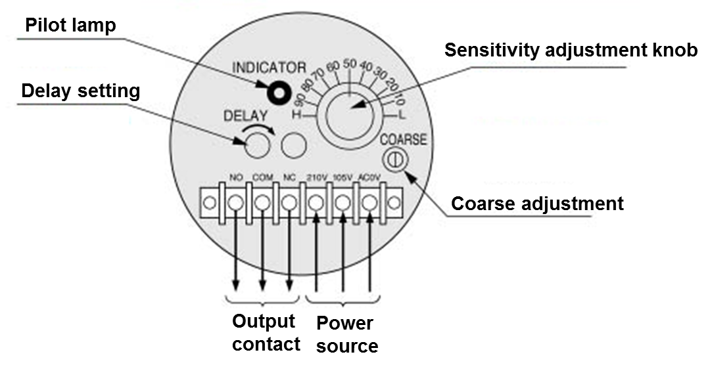

블라스트 부품 / 레벨스위치
레벨스위치 Level Switch
탱크 내 삽입된 전극에 측정 대상물이 접촉할 때 발생하는 정전용량 및 컨덕턴스(임피던스) 변화를 전기신호(ON-OFF)로 변환해 분체·과립·액체·계면의 유무를 검출하는 정전용량식 레벨 스위치(KANSAI Automation Co., Ltd.)입니다.


BLX 모델 대체 및 ALN 시리즈 안내 Model Selection Guide
- 주력 공급 모델 (ALN 컴팩트 일체형): 현재 현장 범용성과 내구성이 뛰어난 ALN 일체형 모델을 주력으로 공급하고 있습니다.
- 기존 BLX 모델 대체 적용 안내: BLX 시리즈와 측정 원리, 사용 전원(AC 105V / 210V), 전극부 치수(Ø22 / Ø18 / Ø12, L=250mm), 허용 온도(-25~+80℃) 및 내압(980kPa)이 동일해 대체 적용이 가능합니다. 다만 소비전력(4.5VA vs 3.5VA), 최소 부하전류(100mA vs 10mA, PLC 등 소전류 부하 주의), 헤드 외경 및 전선관 규격에 차이가 있으므로 교체 전 현장 조건을 반드시 확인해 주시기 바랍니다.
- ALN 모델의 상위 사양: BLX(방적형, 접점 5A) 대비 IP67 완전 방진·방수 등급과 2배 높은 릴레이 접점 용량(10A)을 갖추고 있으며, 고감도·일반감도 영역은 물론 저감도·초저감도 영역까지 폭넓게 대응합니다.
- BLX(헤드 외경 Ø95mm, 전선관 G 1/2")에서 ALN(헤드 외경 Ø114mm, 전선관 G 3/4")으로 대체 설치 시, 주변 설치 공간 및 전선관 규격만 확인해 주시기 바랍니다.
제품 특징 Features
- 가동부가 없는 견고한 구조: 기계적 구동 부품이 없어 마모나 고장이 적으며, 부품 교체 없이 장기간 안정적으로 사용할 수 있습니다.
- 폭넓은 측정 대상물 대응: 분말, 과립, 알갱이, 일반 액체는 물론 고점도 유체, 슬러리 및 두 액체 간의 계면 측정까지 대응합니다.
- 감도 및 지연시간(Delay) 현장 세팅: 증폭부 내장 다이얼과 볼륨을 통해 측정물의 유전율에 맞춘 감도 조정과 최대 약 10초의 출력 지연시간 설정이 가능합니다.
- 다양한 전극 형태 지원: 표준 직봉형(SUS304) 외에도 현장 조건에 따라 평면형(Flat), 와이어형, 테프론 커버형, 내열 사양 등의 선택이 가능합니다.
감도 계급별 주요 적용처 Sensitivity Class & Applications
| 감도 계급 | 안정 검출 범위 | 적용 모델 | 주요 적용 대상물 |
|---|---|---|---|
| 1. 고감도형 (High) | 0.5 ~ 20 pF | ALN / BLX | 플라스틱(PVC, PP), 과립(알갱이), 전분, 시리얼, 시멘트, Oil, LNG 등 저유전율 물질 |
| 2. 일반감도형 (Standard) | 2 ~ 50 pF | ALN / BLX | 물, 접착제, 각종 용액 등 일반 액체 및 분체 |
| 3. 저감도형 (Low) | 20 ~ 1,000 pF | ALN 전용 | 산, 알칼리, 화학약품, 비료, 활성탄, 슬러지 등 도전성·점성 물질 |
| 4. 초저감도형 (Ultra Low) | 5 ~ 35 Ω | ALN 전용 | 카본블랙, 레미콘 등 고점도·고도전성 부착물 |
ALN vs BLX 표준 사양 비교 Standard Specifications
| 항목 | ALN 시리즈 (주력 · 일체형) | BLX 시리즈 (일체형) |
|---|---|---|
| 기기 구성 | 컴팩트 일체형 | 컴팩트 일체형 |
| 사용 전원 (Power Source) | AC 105V / 210V ±10% (50/60Hz) ※ DC 24V 사양 옵션 대응 | AC 105V / 210V ±10% (50/60Hz) |
| 소비 전력 (Power Consumption) | 4.5 VA | 3.5 VA |
| 출력 접점 (Output Contact) | SPDT × 1 | |
| 접점 용량 (Contact Capacity) | AC 250V 10A / DC 30V 10A (저항부하) ※ 최소 부하전류 100mA (DC 24V) | AC 250V 5A / DC 30V 5A (저항부하) ※ 최소 부하전류 10mA (DC 24V) |
| 안정 검출 범위 (Detection Range) | 1. 고감도: 0.5~20pF / 2. 일반감도: 2~50pF 3. 저감도: 20~1,000pF / 4. 초저감도: 5~35Ω | 1. 고감도: 0.5~20pF 2. 일반감도: 2~50pF |
| 지연 시간 설정 (Delay Time) | 최대 약 10초 (가변 볼륨 설정) | |
| 증폭부 허용 온도 | -25 ~ +60℃ (결빙·동결이 없는 상태) | |
| 전극부 표준 치수 | Ø22 / Ø18 / Ø12, L=250 mm (표준 봉타입 기준) | |
| 전극부 허용 온도 | -25 ~ +80℃ (결빙·동결이 없는 상태) | |
| 전극부 허용 압력 | 980 kPa (10 kgf/㎠) | |
| 전극부 편하중 | 최고하중 (L=250mm 기준) 1 kN (100 kg) | |
| 내진동 / 내충격 | 진동: 진폭 2.0mm, 600~3,600/min 전방향 3시간 · 충격: 전극부 98 m/s² (10G) | |
| 보호 등급 (구조) | IP67 (방진·방수) | 방적형 (Drip-proof) |
| 외함 / 전선관 규격 | 헤드 외경 Ø114 mm · 전선관 G 3/4" · 취부 R1 | 헤드 외경 Ø95 mm · 전선관 G 1/2" · 취부 R1 |
구조 및 부품 명칭 Parts & Materials (표준 봉타입 기준)
| No. | 부품 명칭 | 재질 | 수량 |
|---|---|---|---|
| 1 | 케이스 (Housing) | ADC (알루미늄 다이캐스팅) | 1 |
| 2 | 취부 나사 (Screw) | SUS304 | 1 |
| 3 | 접지 전극 (Earth Electrode) | SUS304 | 1 |
| 4 | 절연체 (Insulator) | 폴리아세탈 (Polyacetal) | 1 |
| 5 | 주전극 (Main Electrode) | SUS304 | 1 |
증폭부 단자 및 조정부 안내 Amplifier Adjustment & Wiring

- INDICATOR (작업표시등): 측정물 검출 시 점등되며, 지연시간 설정 여부와 관계없이 검지 상태를 즉시 표시합니다.
- SENSITIVITY ADJ (감도 설정 다이얼): L(최저감도) ~ H(최고감도) 범위(눈금 10~90)에서 측정물 조건에 맞게 설정합니다.
- COARSE (거친 조정 나사): 감도 다이얼로 조정이 부족할 경우 기준 감도 영역을 크게 이동시키는 조정부입니다.
- DELAY (지연시간 설정 볼륨): 검지 시점부터 릴레이 접점 출력까지 최대 약 10초 이내에서 지연 시간을 설정합니다.
- 단자대 결선: 출력접점(NO / COM / NC) 및 계기전원(210V / 105V / AC0V)을 명판 전압에 맞춰 결선합니다.
형식 지정 코드 Order Code (일체형 기준)
ALN - 111 - 1□
| 기기 구성 | 1: 컴팩트 일체형 |
|---|---|
| 검출 전극 형태 | 1: 일반형 봉타입 · 2: 커버형 봉타입 · 3: 평면형(Flat) · 4: 결선형(와이어형) · 5: 기타 특수형 |
| 검출 전극 길이 | 1: 250mm 이하 · 2: 251~500mm · 3: 501~1,000mm · 4: 1,001~2,000mm · 5: 상기 이외 |
| 감도 계급 | 1: 고감도형 · 2: 일반감도형 · 3: 저감도형 · 4: 초저감도형 (※ BLX는 1·2만 해당) |
| 내열 사양 | 공란(Blank): 표준 사양 · H: 내열 사양 |
견적·규격 문의 051-319-2332 · daehatw@daum.net